Theory on the neck
Triads in every inversion, 7th chords, interval shapes, CAGED shapes, scale runs and chord tones over changes, drawn on your own tuning and checked note by note as you play them.
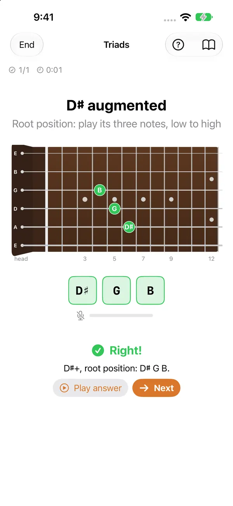
EarFret plays a note, names one or asks for a shape, and you answer on your real instrument. It listens on your device and tells you straight away whether you got it, and how close you were if you didn't.
Free to download. iPhone, iPad, Mac and Apple Watch.
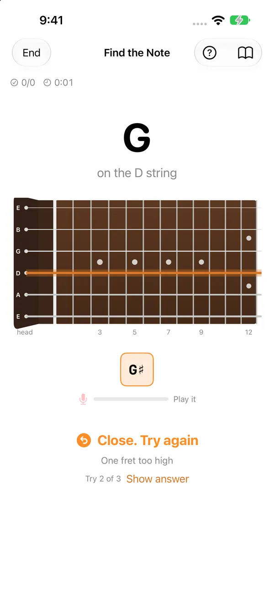
Most fretboard apps have you tap a screen. EarFret has you play, so what you learn ends up in your hands and ears, not just your eyes.
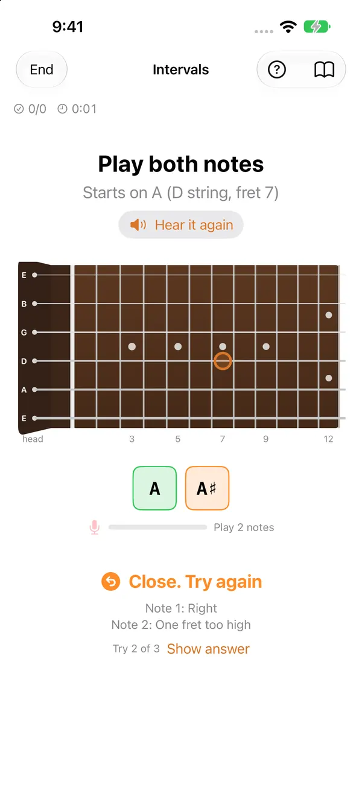
EarFret plays a note, an interval, a melody or a chord, or shows you a note name or a shape to find.
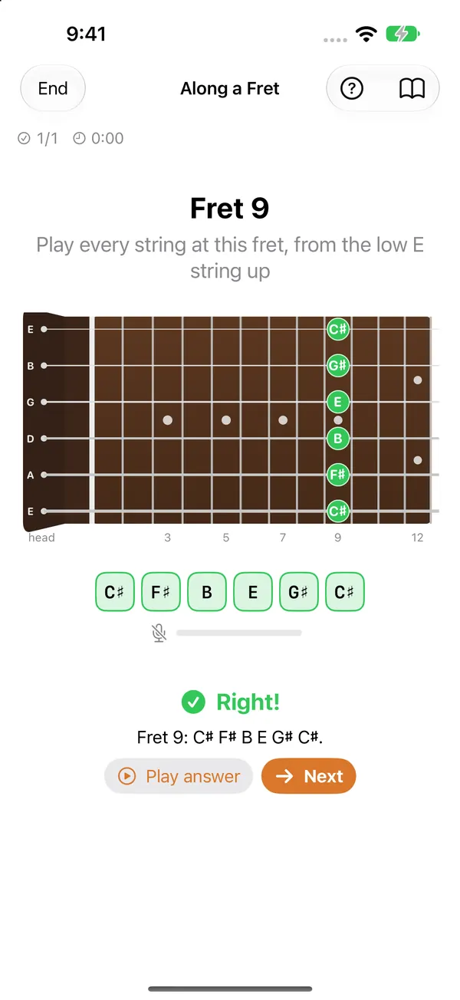
Answer on your guitar or bass, acoustic or electric, or sing it. Every note you play lights up on the neck.
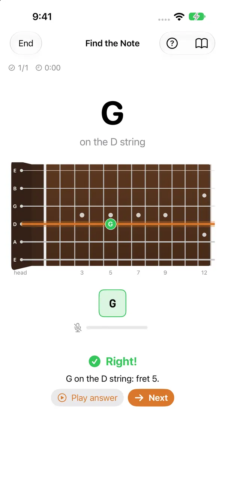
Right away, on the neck: what you played, how close it was ("one fret too high", "right note, wrong octave"), and where the answer is.
The listening happens entirely on your device. No audio is ever recorded, stored or sent anywhere.
A 20-second demo is on its way.
Fretboard, ear, theory, reading and rhythm, with spaced repetition bringing back the parts you're slow on.
Triads in every inversion, 7th chords, interval shapes, CAGED shapes, scale runs and chord tones over changes, drawn on your own tuning and checked note by note as you play them.

Find a note on a string, find every place it lives, name the notes along a fret, work octave shapes. A heat map shows what you know.
Hear a note, an interval or a short melody and play it back. Name chords, progressions, scales and scale degrees by ear, or sing intervals.
Read notes on the staff and play them. Tap or play rhythms back, read them, and feel tempo, meter and swing.
Every string and note is scheduled on its own, so EarFret brings back what you're about to forget, right when reviewing it sticks.
How many can you get in a minute? Beat your best and climb the Game Center leaderboards. Plus a fresh daily challenge, one try a day.
A guided curriculum from open strings to the whole neck, one stage at a time. Already know some? Test out and skip ahead.
Your streak and what's due on the Home Screen. Progress follows you across iPhone, iPad and Mac through your own iCloud.
Guitar (6, 7 or 8 strings), bass, ukulele and more; alternate tunings; left-handed neck; audio interfaces and MIDI.
English and 21 more, from Japanese and Korean to German, Spanish, Portuguese and Ukrainian.
Fun, fast quizzes for the moments between: in line, on the bus, waiting for the kettle. Find notes on the neck, work out intervals, or hear a chord and tap major or minor, right on your wrist. Every answer counts toward your streak and your reviews on iPhone.
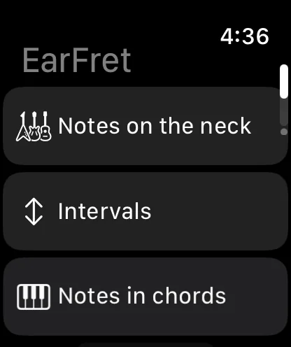
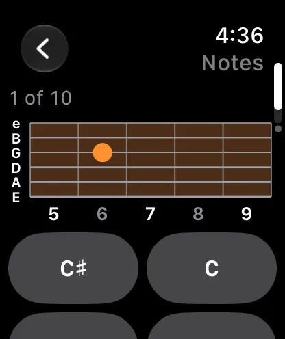
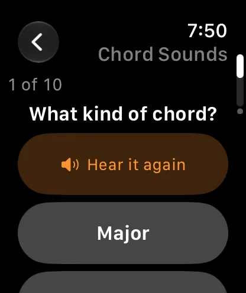
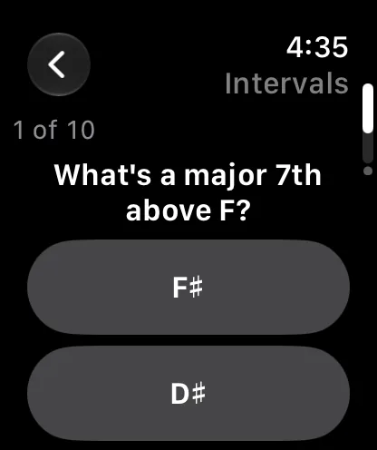
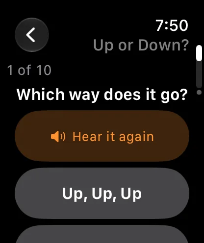
Pick notes on the neck, intervals, notes in chords and notes in keys.
Chord Sounds, Name the Interval, Up or Down? and Which Is Bigger? play through the Watch speaker or your headphones.
Choose 5, 10 or 20 questions. A flame grows with every answer in a row.
Quick quizzes arrive as notifications. Answer with a tap, right there.
Prop an iPad on the music stand or practice at your desk with the Mac next to your amp. Plug in an audio interface and pick the input channel your guitar is on.
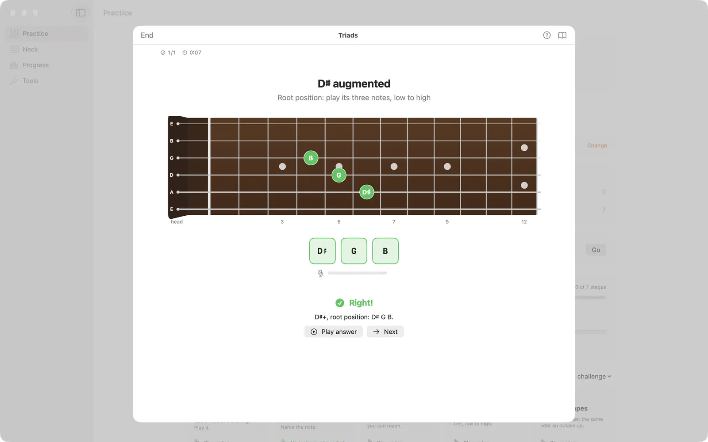
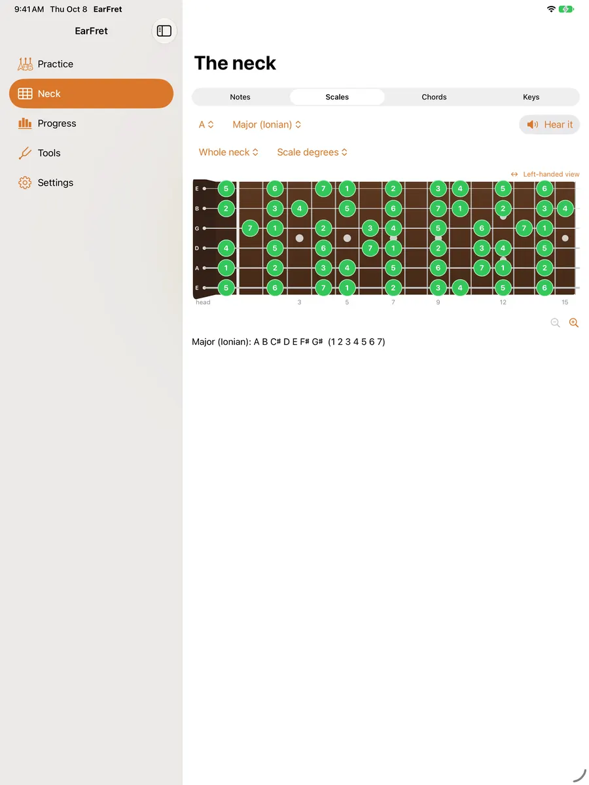
A sidebar on Mac and iPad, a session window on Mac, and a neck that uses all the room you give it.
Use the built-in mic for an acoustic, or go straight in from an interface and choose which input channel EarFret listens to.
EarFret Pro covers iPhone, iPad and Mac, and your progress syncs between them.
Switch to No instrument and every drill becomes tap-to-answer: tap the note names or tap the spot on the neck. The notes you tap still sound, so your ear keeps learning.
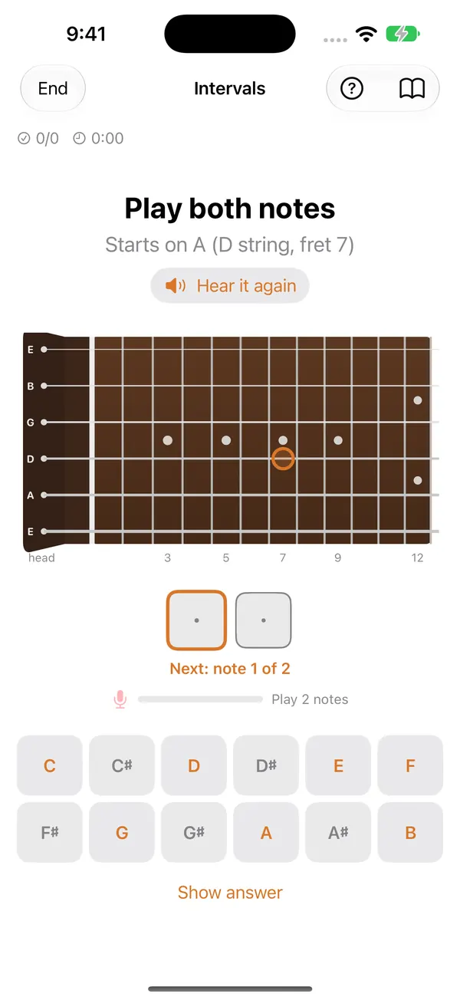
A daily practice goal in minutes, a streak that forgives a rest day, and mastery by topic so you can see exactly what's sticking.
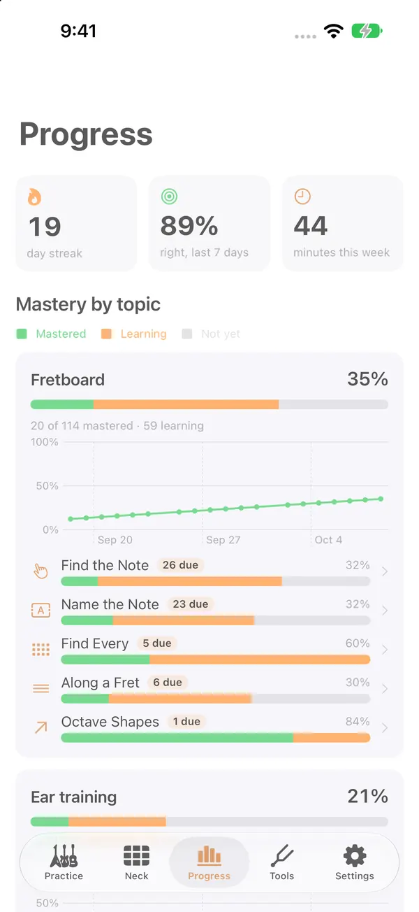
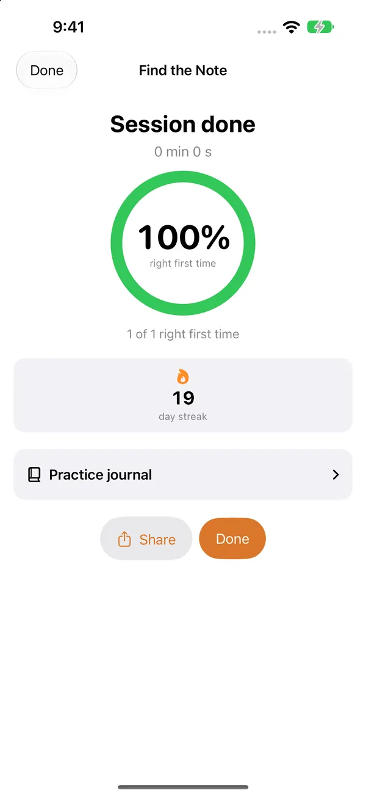
A complete fretboard trainer for standard-tuned guitar or 4-string bass.
The rest of the ear training, theory and shapes, reading and rhythm, singing, sharps and flats, and every other instrument and tuning.
Prices are shown in the app in your local currency.
No. EarFret analyses the sound on your device to work out which notes you played, then discards it. Nothing is recorded, stored or sent anywhere, and there's no account, analytics or tracking. Details are in the privacy policy.
Guitar (6, 7 or 8 strings), bass (4, 5 or 6 strings), ukulele, mandolin, banjo and custom tunings, acoustic or electric, right- or left-handed. You can also sing, or use a MIDI keyboard or MIDI guitar.
iPhone and iPad (iOS and iPadOS 17 or later), Mac (macOS 14 or later), and Apple Watch (watchOS 10 or later) for quick quizzes on your wrist. Widgets work on iPhone, iPad and Mac.
Yes. Plug in your interface and choose which input channel EarFret listens to, so a guitar on input 2 works as well as one on input 1. The built-in microphone works fine for acoustic instruments and amps.
Yes. EarFret Pro is available as a yearly subscription with a free trial, or as a one-time lifetime purchase. Either one covers iPhone, iPad and Mac, and includes Family Sharing.
Yes. No instrument mode turns every drill into tap-to-answer, and the notes you tap still sound. The Apple Watch quizzes and notification quizzes work without an instrument too.
EarFret launches on the App Store on November 17, 2026. A public TestFlight beta opens before then: join the beta or the waitlist.
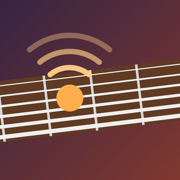
EarFret arrives on the App Store November 17, 2026. Try it early in the public beta, or get one email on launch day.
One email at launch, maybe one when the beta opens. Nothing else.